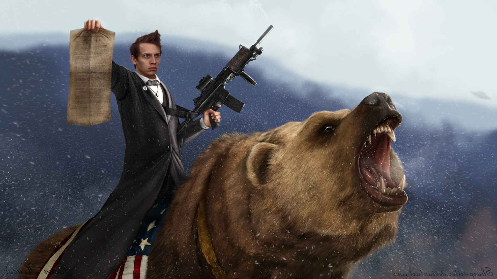

CSE 5912

This page is designated for my CSE 5912 Game Design Capstone Course. I had already created my own self-hosted website using an old computer. I simply added another stand-alone page to the site containing my 3 images using raw HTML. I edited my three photos to make them more artsy using Photoshop. I adjusted the contrast and brightness heavily on the first photo to give it a more bold look. I colorized the second one to contain a sepia-like tone and adjusted the highlights as well as the shadows. Finally, I created the last one using an image of my head and pasting it over another head in a previously created picture. I used the clone stamp tool in Photoshop to eliminate the unwanted portion while preserving a cohesive background to the photo. Then I resized the picture of my head to lay it underneath the man's collar. I adjusted the midtone contrast of my face to make it fit the scene better as well.